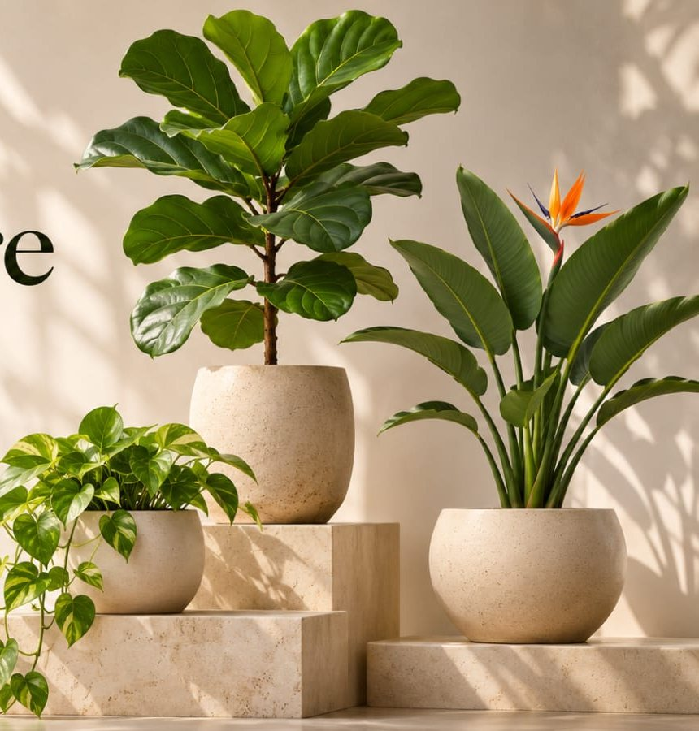
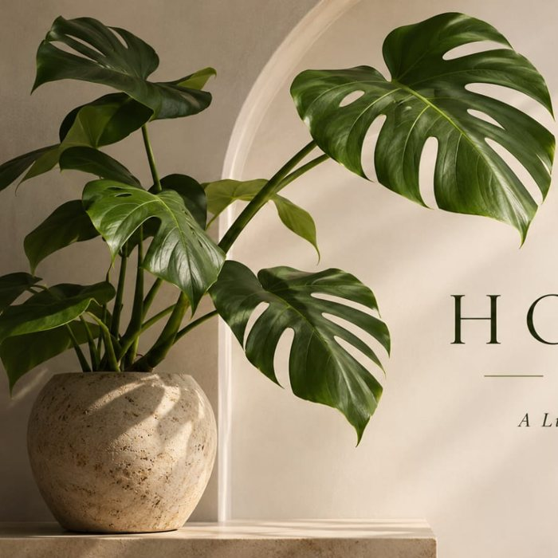
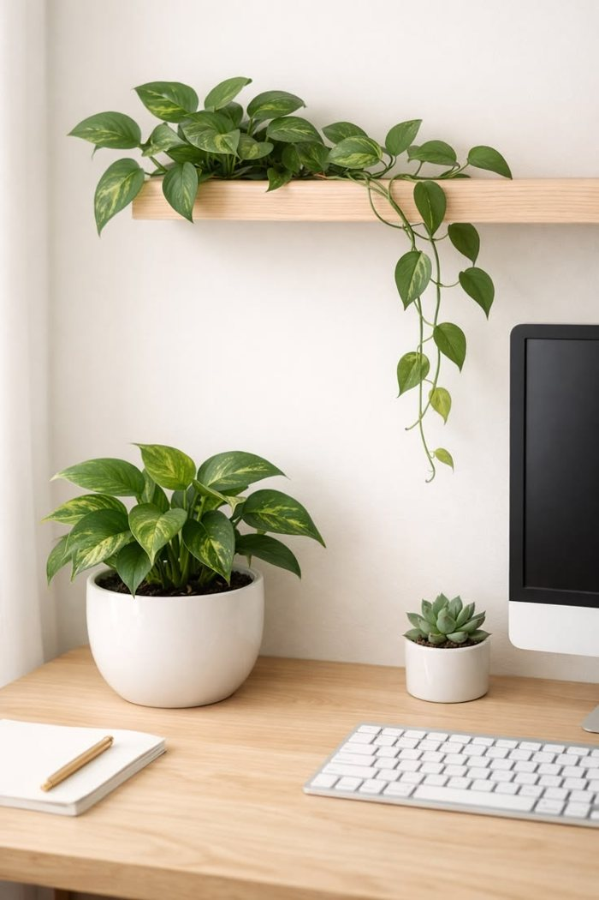

Plants do quiet work. They add oxygen by day, soften hard corners, and give your eyes somewhere calm to rest. A plant on a desk or a windowsill turns a space you simply use into one you want to stay in.
Plants release oxygen and add moisture. NASA’s 1989 study found some species can remove certain indoor pollutants.
Research on indoor greenery links it to lower stress and a better mood, even with just a few pots.
Studies of offices with plants have reported better concentration and higher productivity.
Leaves release water vapour, which helps dry indoor air feel softer, especially with air conditioning.
Air-cleaning results come from sealed lab chambers. In a real room the effect is modest, so treat it as a bonus, not a replacement for fresh air.
Snake, ZZ and Jade plants forgive a missed watering. Check the soil with a finger first; if the top inch is dry, it’s time to water.
Shop easy-care plants